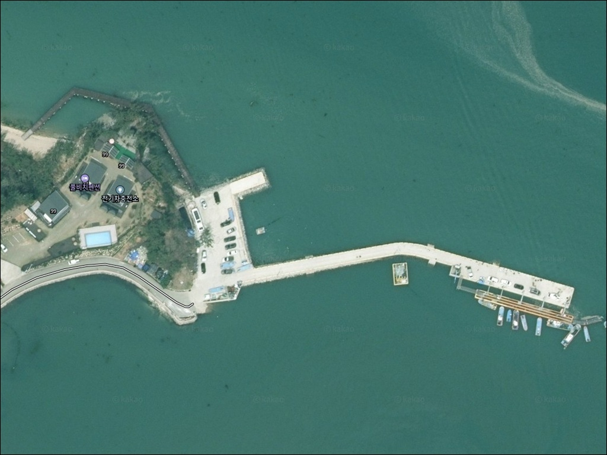
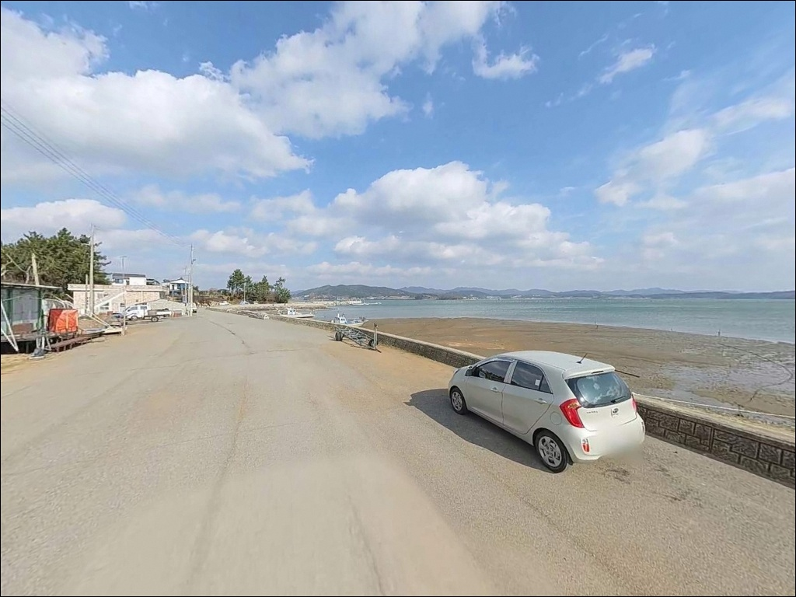
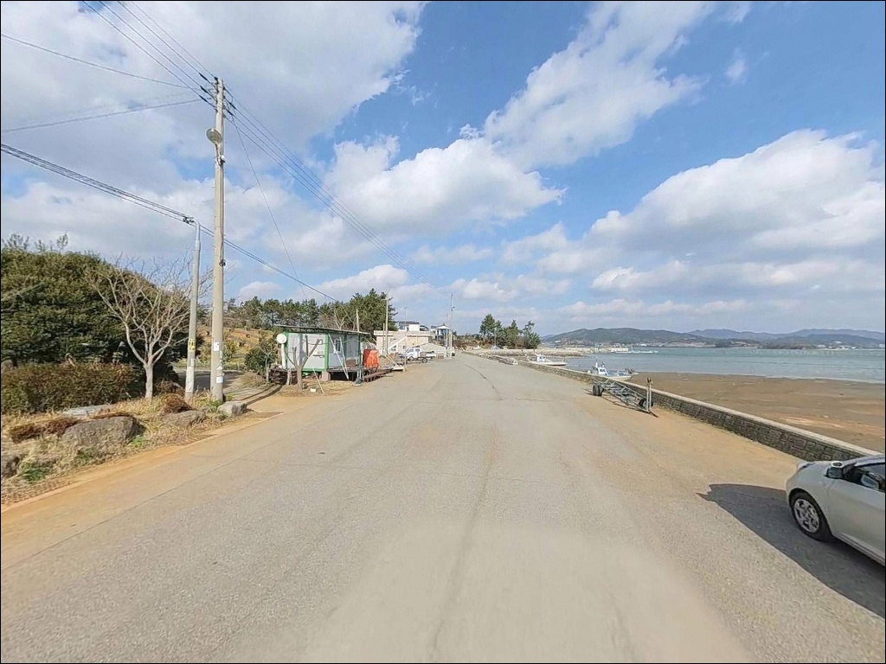
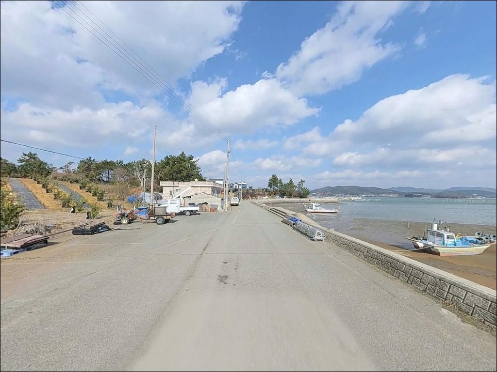
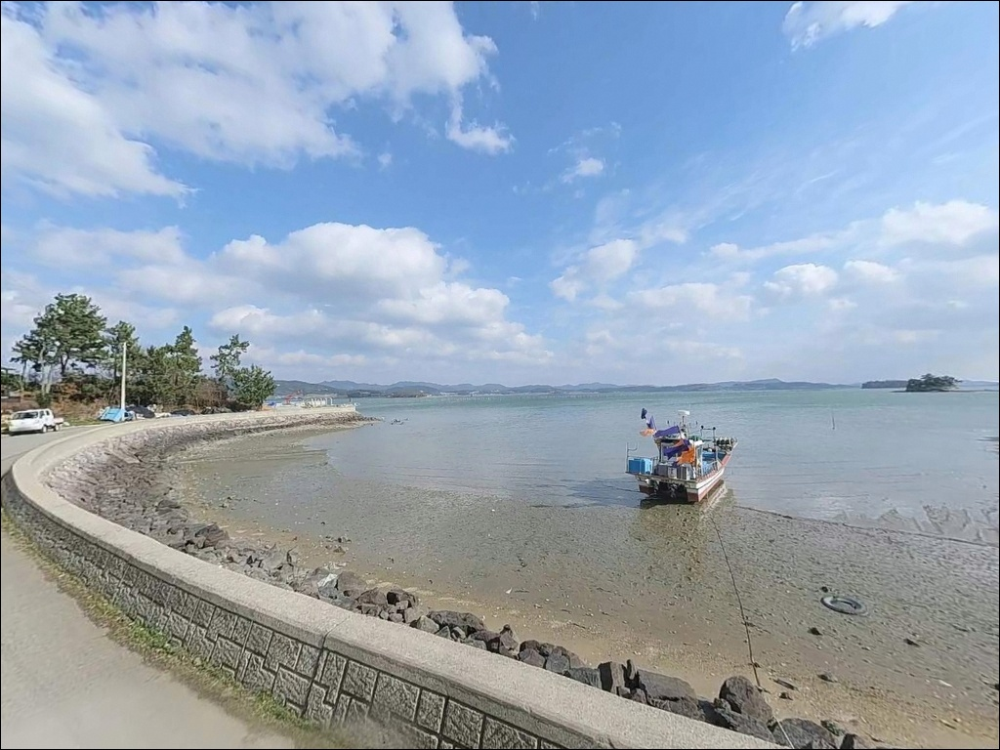
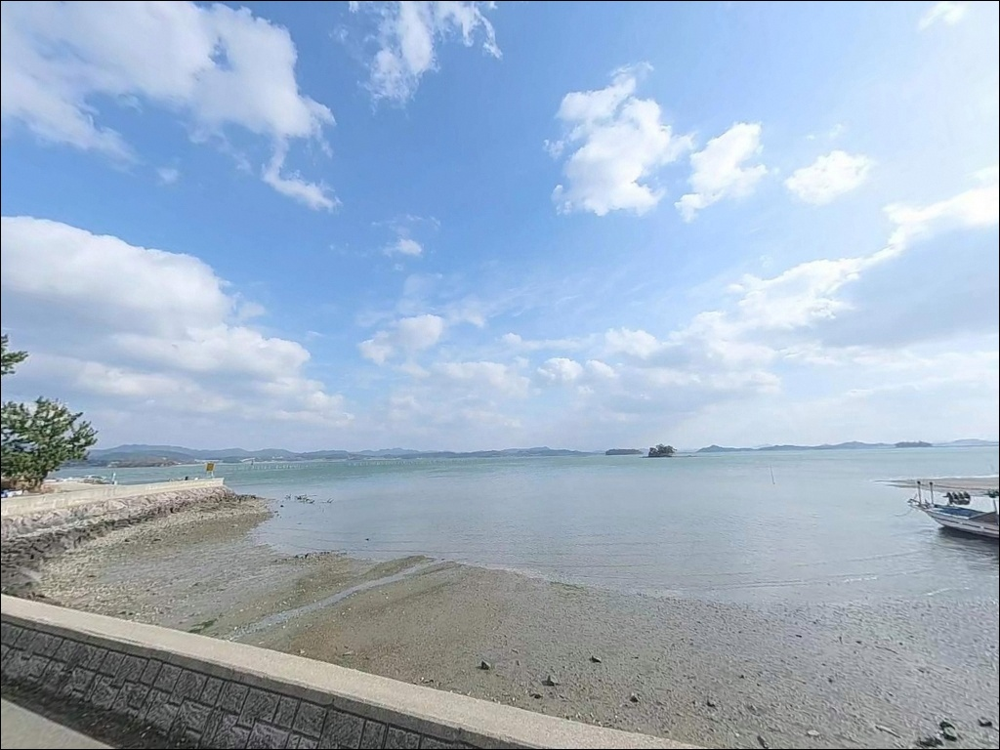
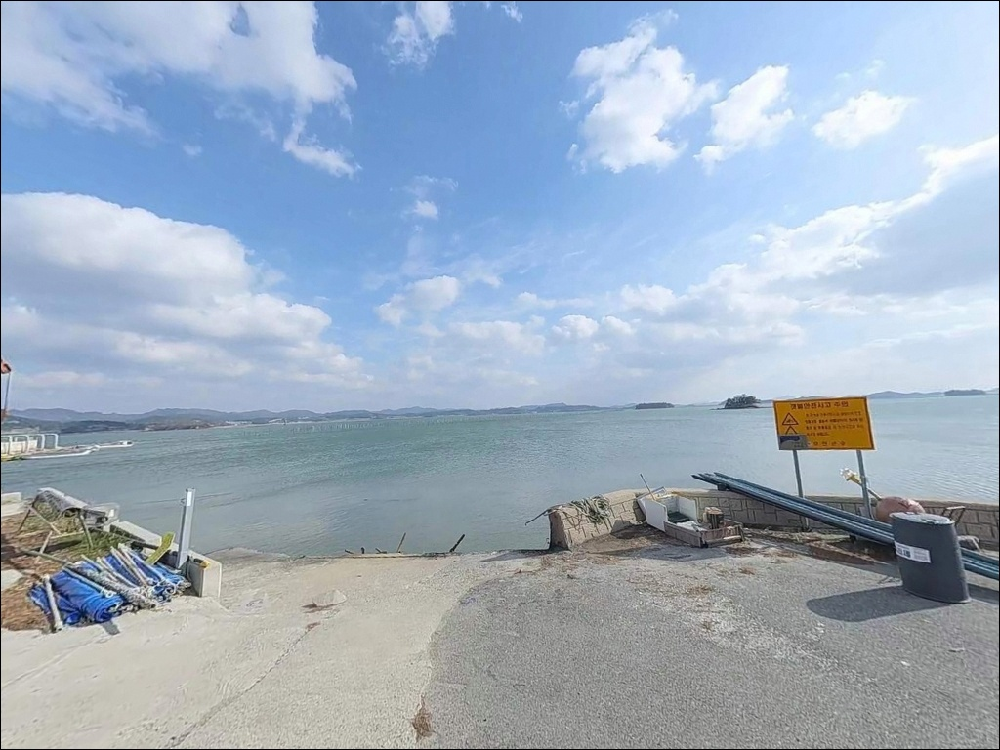
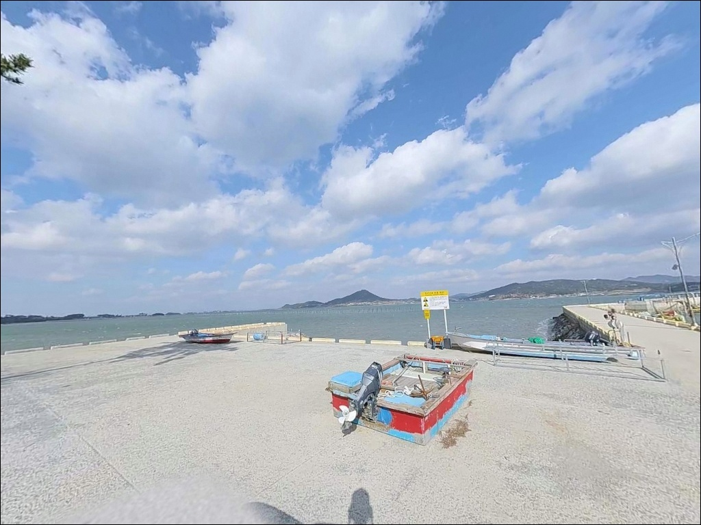
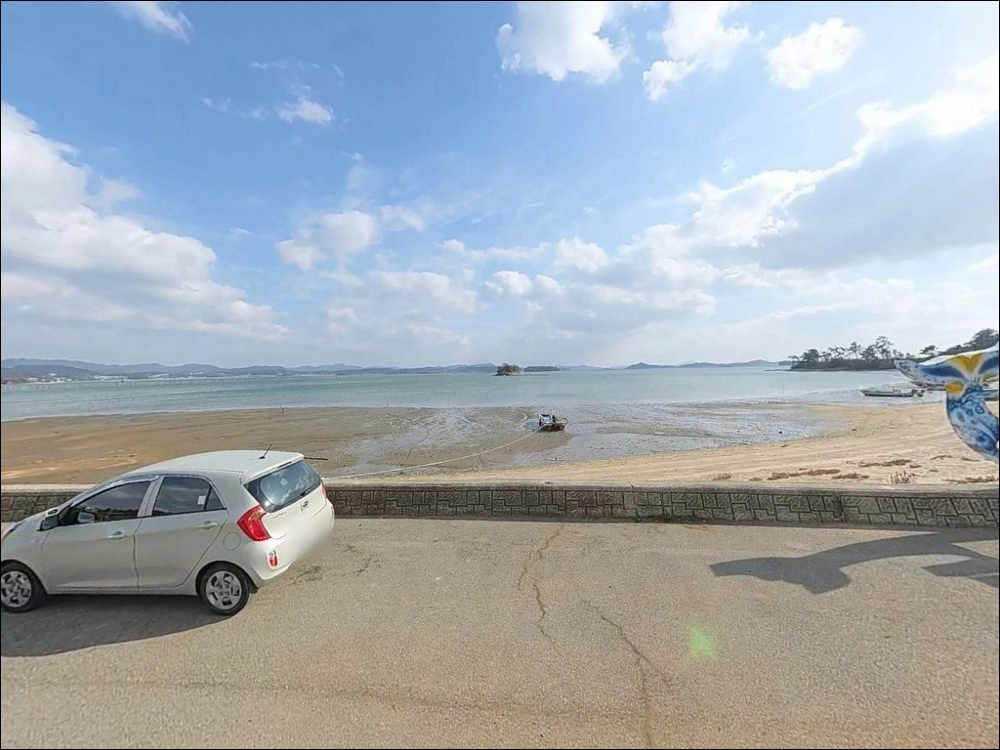

동암리 선착장, 전남 무안군 풍경이 깊은 여운을 남기는 차박, 낚시 해안
이 페이지에는 광고(제휴 링크 포함)가 있으며, 광고 링크를 통해 구매하면 운영자가 판매 수익 또는 수수료를 받을 수 있습니다. 포인트 사진: 카카오맵 스카이뷰·로드뷰. 이 페이지의 지도·사진 이미지는 카카오맵의 실제 서비스 이미지와 다를 수 있습니다.


포인트 안내
동암리 선착장
전남 무안군 운남면 동암리 1094-8
물때 확인 없이 무안 운남면 선착장을 찾아가면
선착장 주변이 갯벌로 드러난 상태를
마주치는 경우가 생깁니다.
무안군 일대는 서해안에서도
조수간만의 차가 특히 큰 지역으로,
간조 때는 어떤 채비를 써도
입질을 기대하기 어려운 수심이 됩니다.
이 글은 동암리 선착장의
진입 동선, 지형 낚시 여건, 차박 체류 조건에 집중합니다.
조황 단정이나 특정 어종 보장은
이 글의 범위에 포함되지 않습니다.

1. 진입 동선과 포인트 접근성
동암리 선착장은 운남면 마을길을 따라
진입하는 구조입니다.
마을 내부 도로 특성상 폭이 넉넉하지 않은
구간이 포함될 수 있어,
대형 SUV나 캠핑카라면
출발 전 위성지도로 진입로를
미리 확인하는 것이 안전합니다.
선착장 진입부 공터와
인근 영해공원 주차 공간이
주차 후보로 활용 가능합니다.
영해공원은 동암리 해안 바로 옆에 조성된
면민 휴식 공간으로,
주차장과 화장실을 갖추고 있습니다.
어선이 운항하는 소규모 어항 구조상
선착장 접안 구역과 어선 계류 공간은
주차나 낚시 자리로 활용하지 않는 것이
기본 매너입니다.
회차 공간은 선착장 주변 공터를 활용하는
방식이 일반적입니다.

2. 차박 환경과 야간 체류 여건
동암리는 소규모 어촌 마을로
야간 차량 통행이 적고
민가 밀집도가 낮은 편입니다.
영해공원 주차 공간을 활용하면
낚시 후 조용히 하룻밤 대기하는 방식이
이 포인트에 잘 맞는 체류 형태입니다.
선착장 주변 조명이 충분하지 않을 수 있어
야간에는 개인 조명 장비를 반드시 챙겨야 합니다.
서해 내만형 구조라 파도가 잔잔한 편이지만,
기상에 따라 바람 영향이 있는 날은
체류 방향도 확인하는 편이 좋습니다.
장기 차박보다는
낚시 출조를 전제한 대기형 체류에
더 어울리는 환경입니다.
인근 민가와 어촌 활동을 배려하여
야간 소음은 최소화하는 것이
기본 매너입니다.


3. 주변 편의시설 및 인프라 현황
동암리 선착장 인근에서 확인된 편의시설은
영해공원의 주차장과 화장실입니다.
편의점이나 식당은
반경 3km 이내에서 확정된 정보가 없으므로,
식수·얼음·낚시 소품은
출발 전에 모두 갖추고 가는 것이
현실적인 준비 방식입니다.
반경 10km권으로 이동하면
운남면 도원항 방면으로
기본 생활 인프라를 찾아볼 수 있습니다.
무안읍 방면으로는 약 15km 거리에
기본 상권이 형성되어 있습니다.
비상 상황에 대비해
연료·비상약품·음수는 충분히 준비하고
출발하는 것이 기본입니다.

4. 낚시 여건이 달라지는 진입 전 확인 사항
동암리 선착장에서 가장 먼저 확인해야 할 것은
물때입니다.
무안군은 우리나라 서해안에서도
조수간만의 차가 손꼽히는 지역으로,
간조에는 선착장 주변이 갯벌로 드러나
낚시 자체가 불가능한 상황이 됩니다.
바다타임에서 운남면 기준 물때를 확인하고
중들물부터 만조 전후를 노려
출발 시각을 맞추는 것이 기본 전략입니다.
서해는 날씨 변화가 빠른 편입니다.
기상청 해상예보를 출발 전날과
당일 아침 두 번 확인하는 편이 좋습니다.
갯벌이 노출된 구간에서는 미끄럼 사고가
발생하기 쉬우니,
미끄럼 방지 신발과 구명조끼 착용은
선착장 낚시의 기본 안전 수칙입니다.
소규모 어항이라 현장에서
낚시 소품을 보충하기 어렵습니다.
채비 손실에 대비해
여분 채비를 넉넉하게 준비하는 것이 좋습니다.

5. 지형 기반 낚시 여건 분석
동암리 선착장은 내만형 갯벌 해안에
자리한 소규모 어촌 선착장입니다.
외해 노출이 적은 만 안쪽 구조라
파도 영향이 적고 수면이 잔잔한 편이지만,
수심이 얕은 것이 이 지형의 가장 큰 특징입니다.
낚시 가능한 수심은 들물이 충분히 들어온
만조 전후 시간대에 집중됩니다.
선착장 끝단은 조류가 모이는 구조상
주변보다 상대적으로 수심이 깊어지는
구간이 됩니다.
선착장 좌우 측면에는
배 정박 수로 형태의 구간이 있어
조류가 통하는 구간을 먼저 탐색하는 것이
자리 선정의 기본입니다.
바닥은 갯벌·모래 혼합 지형으로,
원투 채비가 바닥을 탐색하는 방식에
잘 맞는 구조입니다.
봄~가을 시즌에는 다양한 어종이
선착장 주변을 드나드는 패턴이
운남면 해안선 일대에서 확인됩니다.
최신 조황은 출발 전에 꼭 검색해 보시기 바랍니다.


6. 포인트에 어울리는 낚시 스타일
이 포인트에 가장 잘 맞는 방식은
원투낚시입니다.
갯벌·모래 바닥과 얕은 수심 구조에서
들물 시간대를 노려
채비를 멀리 던진 뒤 바닥층을 탐색하는 방식이
이 지형 조건과 맞습니다.
갯지렁이 미끼 채비로 망둥어·숭어·붕장어류를
기대해볼 수 있는 구조입니다.
찌낚시도 선착장 구조물 주변에서
시도해볼 만한 방식입니다.
방파제나 물양장 가장자리에서
들물 타이밍을 노리는 찌낚시는
이 포인트 지형에서 병행하기 좋은 스타일입니다.
숭어가 드나드는 만조 전후 시간대에는
구조물 경계 가까이에서 반응이 살아나는
경우가 있습니다.
소형 루어 채비로
선착장 주변 구조물 경계를
탐색해보는 방식도 어울립니다.
수심이 확보되는 만조 전후 시간대에
소형 웜이나 지그헤드 채비로
바닥 가까이 천천히 끌어오면
내만형 소형 어종의 반응을
기대해볼 수 있습니다.
무안 운남면 해안선은 봄 시즌
산란기 감성돔이 북상하며 잠시 머무는
패턴이 인근 포인트에서 확인되므로,
봄철 방문이라면 찌낚시와 함께
노려볼 수 있는 어종입니다.

7. 대안 포인트와 플랜 B 동선
동암리 선착장 조건이 여의치 않거나
수심이 기대에 못 미칠 경우
가장 먼저 이동할 후보는
도원선착장입니다.
동암리에서 차량으로 약 8~10분 거리로,
현지에서 낚시꾼이 찾는 선착장으로 알려진 곳입니다.
2026년 어촌신활력증진사업 대상으로
정비가 예정되어 있으므로
방문 전 공사 여부를 사전에 확인하는 것이 좋습니다.
망운면 방면으로 약 15~20분 이동하면
톱머리 방파제와 해수욕장 일대에 닿습니다.
봄철 감성돔 낚시 포인트로 언급되는 곳으로,
편의시설도 동암리보다 갖춰진 편입니다.
동암리를 메인으로 잡고
여건이 맞지 않을 때의 이동 동선으로
미리 확인해 두는 것이 효율적입니다.
차박 대안으로는
편의시설이 더 갖춰진 환경을 원한다면
무안 서해안 방면 캠핑장을
플랜 B로 준비해 두는 것이 좋습니다.

물때만 맞추면
조용한 낚시가 되는 포인트입니다
원투낚시나 찌낚시를 즐기는 낚시인이라면
동암리 선착장의 갯벌 내만 구조는
들물 타이밍을 기다리며 천천히 공략하는
방식에 잘 맞는 포인트입니다.
관광지처럼 붐비지 않는 조용한 어촌 분위기와
영해공원을 낀 주차·화장실 여건 덕분에
기본 편의는 현장에서 해결됩니다.
반면 물때 확인 없이 찾아가거나
갯벌이 넓게 드러진 간조에 도착하면
낚시가 불가능한 상황을 마주칩니다.
물때 확인, 자급 준비, 진입로 사전 점검,
이 세 가지를 갖추고 가는 것이
이 포인트를 제대로 활용하는 조건입니다.
들물 시간을 맞추고 영해공원 주차 공간에
차를 세운 뒤 선착장 끝단으로 채비를 던지면,
차박과 낚시를 함께 즐기기 좋은
조용한 출조가 됩니다.